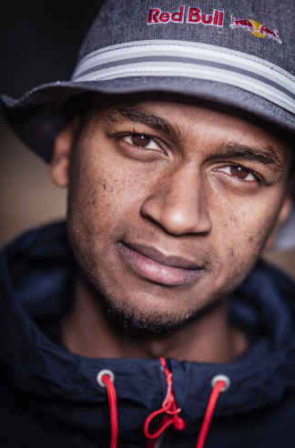
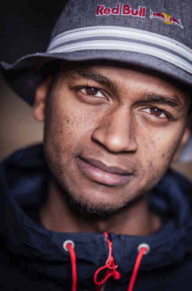

Mutaz Barshim is a Qatari high jumping world champion, holder of the Asian record and, at 2.43m, has registered the second highest jump in history.
Mutaz Barshim has always been into sports. He grew up in an extremely active family :
his father was an athlete and all his brothers practised sports regularly. As a child, his father used
to take him to the local athletics club and he loved it. At around 11 years old, Mutaz started going to
training by himself. Focusing on the high jump, Mutaz soon started to reach heights he never before
thought possible… both figuratively and literally!
By the time he was 19, he had racked up a host of Junior Level titles, including four gold medals – one
of which was at the World Championships – and earning the title of the 10th best Junior high jumper in
history!
But it’s been in his adult career that Mutaz has really flourished. He’s the national record and Asian
record holder with a best mark of 2.43m (the second-highest in history), he won silver at the London
2012 and Rio 2016 Olympic Games, and went one better at the Rio Olympics to take silver. He also brought
home the gold after an imperious display at the 2017 World Championships in London, and again in Doha in
2019, when he became the first man to successfully defend the world high jump title.
He’s also had plenty of success in the IAAF Diamond League, with some of his most memorable wins coming
in Shanghai and in front of his home fans in Doha. “Sport is everything for me,” says Mutaz. “It’s my
lifestyle, my job, my fun and my health. When I jump, I feel amazing, like I’m flying!” Mutaz is proud
to say that he’s doing what he loves the most, the best way he can and in the future he wishes to be a
world record holder.
He then secured the biggest title in 2021, claiming gold at the Games in Tokyo. He has become a national
treasure in Qatar after reaching the pinnacle of his sport and showcased the ultimate display of
sportsmanship in the process.